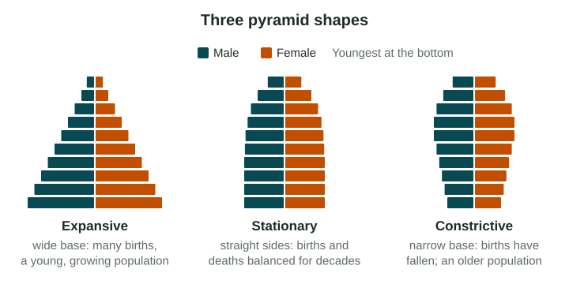

Population Composition
A population pyramid shows a population’s age structure and sex ratio, one cohort per bar.
Part 1 · Hook
Why this matters
Part 2 · Before you start
What this builds on
Part 3 · Prerequisite check
Quick check before you start
1. Which density divides all people by arable land?
- Physiological density
- Arithmetic density
- Agricultural density
- Carrying capacity
Show the answer
Physiological density compares people with the land that can grow crops.
- Correct: Physiological density:
- Arithmetic density:
- Agricultural density:
- Carrying capacity:
2. A graph shows data for one whole country. What is its scale of analysis?
- National
- Local
- Global
- Regional
Show the answer
One value for a whole country is the national scale.
- Correct: National:
- Local:
- Global:
- Regional:
Part 4 · See it
See it first

Part 5 · Step by step
How it works, step by step
- Many babies are born each year for decadeseach new cohort is bigger than the last, so the pyramid has a wide base
- Births fall and stay lowthe youngest cohorts shrink, so the base narrows
- The large cohorts born earlier grow olderthe middle and top of the pyramid widen
- The shape of the pyramid changesa country’s needs change: from schools and jobs to health care and pensions
Part 6 · Key ideas
Key ideas
- A population pyramid shows a population by age and sex: males on the left, females on the right, youngest at the bottom. Each bar is a cohort, a group born in the same years.
- Age structure is how a population is split among age groups. Sex ratio is the number of males for every 100 females.
- Shapes: expansive (wide base, a young, growing population), stationary (straight sides) and constrictive (a base narrower than the middle, falling births).
- Bulges and dents tell stories: a baby boom, a war, or workers moving in. The pattern can differ at the local scale (a college town) from the national one.
Part 7 · Misconception
A common mistake
The wrong idea: A wide pyramid means a country has a large population.
What actually happens: A pyramid shows shares by age and sex, not the total. A wide base means a young population with many children, whatever the country’s size.
Part 8 · Check yourself
Check yourself
Exam-style questions. Anything you miss goes into your review queue.
Data
Population pyramid of Country P
Invented data for practice.
1. Which phrase describes the shape of Country P’s pyramid?
- Expansive: a wide base that narrows quickly
- Constrictive: a base narrower than the middle bars of the pyramid
- Stationary: nearly straight sides until old age
- Top-heavy: more older people than children
Show the answer
An expansive pyramid has a wide base and narrows quickly toward the top. It shows a young population with many children.
- Correct: Expansive: a wide base that narrows quickly: Right: the youngest bars are the longest and each older bar is shorter.
- Constrictive: a base narrower than the middle bars of the pyramid: P’s base is its widest part.
- Stationary: nearly straight sides until old age: P’s sides slope in steeply from the bottom.
- Top-heavy: more older people than children: P has far more children than older people.
2. What will Country P most likely need more of in the next 15 years?
- Care homes and pensions for a growing share of retired people
- Fewer teachers, because the number of children is falling
- Schools, and then jobs for young adults
- Workers from abroad to replace a shrinking workforce
Show the answer
A wide base means many children. Over the next 15 years they move up the pyramid, first into schools and then into the job market.
- Care homes and pensions for a growing share of retired people: P has very few people over 65; its needs are for the young.
- Fewer teachers, because the number of children is falling: the youngest bars are the longest, so the number of children is large.
- Correct: Schools, and then jobs for young adults: Right: the many young children will need schools, then work.
- Workers from abroad to replace a shrinking workforce: P’s workforce will grow as its many children reach working age.
Data
Population pyramid of Country Q
Invented data for practice.
3. Which cohort is the largest in Country Q?
- Children aged 0 to 4
- People aged 80 and over
- Young adults aged 20 to 24
- People aged 50 to 54
Show the answer
A cohort is a group of people born in the same years. In Country Q the 50-54 cohort has the longest bars.
- Children aged 0 to 4: the 0-4 bars are the shortest in the pyramid.
- People aged 80 and over: the 80+ group is small, even though women outnumber men in it.
- Young adults aged 20 to 24: the 20-24 bars are shorter than the bars for ages 40 to 59.
- Correct: People aged 50 to 54: Right: the 50-54 bars are the longest on both sides.
4. What does the narrow base of Country Q’s pyramid suggest?
- Fewer babies are born each year than 50 years ago
- Many young children are dying before they reach school age
- Many families with babies have moved into Country Q from abroad
- The population of Country Q will grow quickly in the next 20 years
Show the answer
A base narrower than the middle bars is a constrictive pyramid. It shows that births have fallen: the cohorts born recently are smaller than those born decades ago.
- Correct: Fewer babies are born each year than 50 years ago: Right: the youngest cohorts are smaller than those born half a century earlier.
- Many young children are dying before they reach school age: the base narrows smoothly over many groups, the pattern of falling births.
- Many families with babies have moved into Country Q from abroad: that would widen the base, not narrow it.
- The population of Country Q will grow quickly in the next 20 years: few children now means fewer future parents, so growth slows.
5. An invented country has 52 million males and 48 million females. What is its sex ratio, to the nearest whole number?
Type a number. No calculator needed: work it out by hand, as on the exam.
Show the answer
Sex ratio = males per 100 females: .
- Answer: 108
6. As a country’s birth rate falls over many decades, its pyramid changes shape. Put the shapes in order, from high birth rate to very low birth rate.
Pyramid shapes as births fall
- Stage 1
- Stage 2
- Stage 3
Pick a piece, then the place it belongs. Drag works too. Pick a filled place to take its piece back.
Show the answer
High births give a wide base (expansive). When births level off, the sides become nearly straight (stationary). When births fall below earlier levels, the base becomes narrower than the middle (constrictive).
- Stage 1: Expansive: wide base, narrow top
- Stage 2: Stationary: straight sides
- Stage 3: Constrictive: base narrower than middle
Part 9 · Summary
Summary
Part 10 · Up next
What comes next
Part 11 · Connections